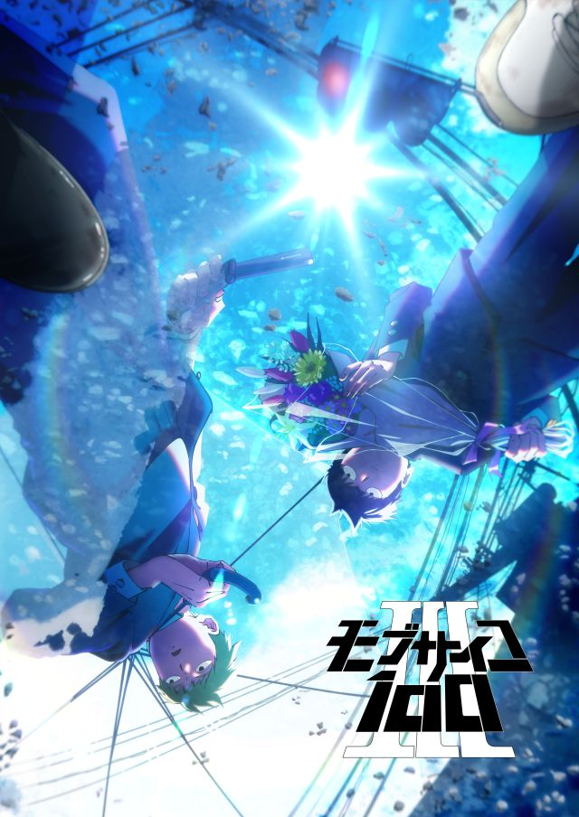

Mob psycho 100
Hay una organización que está reclutando espers con un propósito malvado. Sin embargo, Mob, que posee poderes psíquicos, intenta ser el protagonista de su propia vida. Ve todo lo que quieras.
Este show es una joya de show, no solo demuestra como poder sobrepasar los desafios de uno sino tambien enseña lo que es el autconocimiento de uno, el auto amor. Seguimos la vida de un introvertido llamado mob que tienes poderes, los cuales son afectados por sus sentimientos. Por esta misma razon no se expresa mucho. Gracias a amigos que se unen con el lo ayudan a autoexpresarse y se vuelve un nio con mas sentimientos